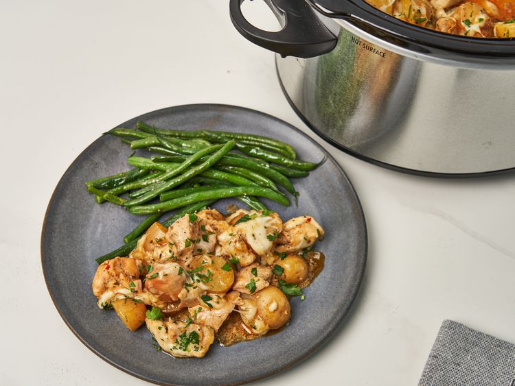

Home
Slow Cooker Parmesan Garlic Chicken Potatoes

Description
Sinfully delicious meal in just 15 minutes of prep (4 hours in slow cooker).
Ingredients
- 2 pounds potatoes, cut into 1 ½- to 2-inch chunks
- 2 tablespoons olive oil
- 1 teaspoon kosher salt
- 3/4 teaspoon ground black pepper
- 1/2 teaspoon paprika
- 2 pounds skinless, boneless chicken breasts, diced into 1 ½-inch pieces
- 1 cup creamy Parmesan garlic sauce, such as Buffalo Wild Wings Parmesan Garlic Sauce
- 1/2 cup water or chicken stock
- 2 cups shredded mozzarella cheese
- 1/4 cup grated Parmesan cheese (optional)
- 1 tablespoon chopped fresh parsley, or to taste (optional)
Steps
- Combine potatoes, olive oil, 3/4 teaspoons salt, 1/2 teaspoon black pepper, and paprika in the bottom of a slow cooker and stir until well coated.
- Cook on High for 4 hours (or on Low for 6 hours), or until chicken is cooked through and potatoes are tender. During the last 20 minutes of cooking, add mozzarella and parmesan and continue to cook, covered. Sprinkle with parsley to serve.